Code
!pip install dldna[colab] # in Colab
# !pip install dldna[all] # in your local
%load_ext autoreload
%autoreload 2 
“理论和实践之间的差异比理论和实践本身更大。” - 扬·勒孔（Yann LeCun），2018 年图灵奖得主
深度学习模型的成功很大程度上依赖于有效的最优化算法和恰当的权重初始化策略。本章将深入探讨深度学习模型训练的核心要素——最优化与初始化方法，并通过可视化来直观地理解这一过程。首先，我们将回顾各种权重初始化方法的发展历程及其数学原理，这些方法奠定了神经网络学习的基础。然后，从梯度下降（Gradient Descent）开始，我们比较分析了包括 Adam、Lion、Sophia 和 AdaFactor 等最新最优化算法的工作原理和性能。特别地，除了理论背景之外，我们还将通过实验验证每个算法在实际深度学习模型训练过程中的具体表现。最后，我们将介绍多种高维损失函数空间（loss landscape）的可视化与分析技术，并通过这些方法提供对深度学习模型学习动力学（learning dynamics）深入理解的洞察力。
神经网络的参数初始化是决定模型收敛性、学习效率和最终性能的关键因素之一。不正确的初始化可能是导致学习失败的主要原因。PyTorch 通过 torch.nn.init 模块提供了多种初始化方法，详细内容可在官方文档中查阅（https://pytorch.org/docs/stable/nn.init.html）。初始化方法的发展反映了深度学习研究者们克服神经网络学习难题的历史。特别是不当的初始化会导致梯度消失（vanishing gradient）或梯度爆炸（exploding gradient），这些现象会妨碍深层神经网络的学习。近年来，随着 GPT-3、LaMDA 等大规模语言模型（Large Language Models, LLMs）的出现，初始化的重要性更加凸显。随着模型规模的增大，初始参数分布对学习初期阶段的影响也会放大。因此，选择与模型特性和规模相匹配的适当初始化策略已成为深度学习模型开发的必要步骤。
神经网络初始化方法的发展是深入的数学理论和大量实验验证共同作用的结果。每种初始化方法都是为了解决特定问题情况（如：使用特定激活函数、网络深度、模型类型）或改善学习动力学而设计，并随着时代的变迁应对新的挑战不断发展。
以下是本书将重点比较和分析的初始化方法。（完整实现代码收录在 chapter_04/initialization/base.py 文件中。）
!pip install dldna[colab] # in Colab
# !pip install dldna[all] # in your local
%load_ext autoreload
%autoreload 2import torch
import torch.nn as nn
import numpy as np
# Set seed
np.random.seed(7)
torch.manual_seed(7)
from dldna.chapter_05.initialization.base import init_methods, init_weights_lecun, init_weights_scaled_orthogonal, init_weights_lmomentum # init_weights_emergence, init_weights_dynamic 삭제
init_methods = {
# Historical/Educational Significance
'lecun': init_weights_lecun, # The first systematic initialization proposed in 1998
'xavier_normal': nn.init.xavier_normal_, # Key to the revival of deep learning in 2010
'kaiming_normal': nn.init.kaiming_normal_, # Standard for the ReLU era, 2015
# Modern Standard
'orthogonal': nn.init.orthogonal_, # Important in RNN/LSTM
'scaled_orthogonal': init_weights_scaled_orthogonal, # Optimization of deep neural networks
# 2024 Latest Research
'l-momentum': init_weights_lmomentum # L-Momentum Initialization
}LeCun 初始化 (1998年): \(std = \sqrt{\frac{1}{n_{in}}}\)
Xavier 初始化 (Glorot, 2010): \(std = \sqrt{\frac{2}{n_{in} + n_{out}}}\)
Kaiming 初始化 (He, 2015): \(std = \sqrt{\frac{2}{n_{in}}}\)
L-Momentum 初始化是2024年提出的一种最新的初始化方法，受现有基于动量的优化算法启发，控制初始权重矩阵的L-动量。
公式:
\(W \sim U(-\sqrt{\frac{6}{n_{in}}}, \sqrt{\frac{6}{n_{in}}})\) \(W = W \cdot \sqrt{\frac{\alpha}{Var(W)}}\)
其中\(U\)是均匀分布，\(\alpha\)表示L-动量的值，通常使用优化器中的动量值的平方。
目标是在初期减少梯度波动，提供稳定的训练路径。
该方法适用于多种优化器及激活函数，并且实验结果显示它有助于使用较大的学习率、快速收敛和提高泛化性能。
大多数现代初始化方法都遵循以下三个核心原则（明确或隐含）：
方差保持 (Variance Preservation): 前向传播时激活值的方差和反向传播时梯度的方差在各层中应保持恒定。
\(Var(y) \approx Var(x)\)
这有助于防止信号变得过大或过小，从而实现稳定的训练。
谱控制 (Spectral Control): 控制权重矩阵的奇异值(singular value)分布，以确保学习过程中的数值稳定性。
\(\sigma_{max}(W) / \sigma_{min}(W) \leq C\)
这在循环神经网络(RNN)等需要反复乘以权重矩阵的结构中尤为重要。
表达力优化 (Expressivity Optimization): 通过最大化权重矩阵的有效秩(effective rank)，使网络具有足够的表达能力。
\(rank_{eff}(W) = \frac{\sum_i \sigma_i}{\max_i \sigma_i}\) 最近的研究努力满足这些原则。
总之，初始化方法应谨慎选择，需考虑模型的规模、结构、激活函数以及优化算法之间的相互作用。这是因为这对模型的学习速度、稳定性和最终性能有重大影响。
随着神经网络深度的增加，前向传播(forward propagation)及反向传播(backpropagation)过程中保持信号的统计特性（特别是方差）非常重要。这可以防止信号消失(vanishing)或爆炸(exploding)，从而实现稳定的训练。
设第\(l\)层的激活值为\(h_l\)，权重矩阵为\(W_l\)，偏置为\(b_l\)，激活函数为\(f\)，则前向传播可表示如下：
\(h_l = f(W_l h_{l-1} + b_l)\)
假设输入信号\(h_{l-1} \in \mathbb{R}^{n_{in}}\)的每个元素是均值0、方差\(\sigma^2_{h_{l-1}}\)的独立随机变量，权重矩阵\(W_l \in \mathbb{R}^{n_{out} \times n_{in}}\)的每个元素是均值0、方差\(Var(W_l)\)的独立随机变量，并且偏置\(b_l = 0\)。假设激活函数为线性时，以下成立。
\(Var(h_l) = n_{in} Var(W_l) Var(h_{l-1})\) （其中\(n_{in}\)是第\(l\)层的输入维度）
为了保持激活值的方差，需要\(Var(h_l) = Var(h_{l-1})\)，因此\(Var(W_l) = 1/n_{in}\)。
在反向传播时，对于误差信号\(\delta_l = \frac{\partial L}{\partial h_l}\)（其中\(L\)是损失函数），存在以下关系：
\(\delta_{l-1} = W_l^T \delta_l\) （假设激活函数为线性）
因此，在反向传播时为了保持方差，需要\(Var(\delta_{l-1}) = n_{out}Var(W_l)Var(\delta_l)\)，所以\(Var(W_l) = 1/n_{out}\)。（其中\(n_{out}\)是第\(l\)层的输出维度）
ReLU 激活函数
ReLU 函数（\(f(x) = max(0, x)\)）会使输入的一半变为0，因此激活值的方差有减少的趋势。Kaiming He为此提出了以下的方差保持公式：
\(Var(W_l) = \frac{2}{n_{in}} \quad (\text{ReLU 专用})\)
这是为了补偿通过ReLU时发生的方差减小。
Leaky ReLU 激活函数
对于Leaky ReLU（\(f(x) = max(\alpha x, x)\)，\(\alpha\)是一个较小的常数），通用公式如下：
\(Var(W_l) = \frac{2}{(1 + \alpha^2) n_{in}}\)
也可以使用Fisher Information Matrix (FIM)的逆矩阵进行初始化。FIM包含了参数空间中的曲率信息，利用这一点可以实现更有效的初始化。（更多详细内容参见参考文献[4] Martens, 2020）。
权重矩阵 \(W \in \mathbb{R}^{m \times n}\) 的奇异值分解 (Singular Value Decomposition, SVD) 表示为 \(W = U\Sigma V^T\)。其中 \(\Sigma\) 是对角矩阵，其对角元素是 \(W\) 的奇异值 (\(\sigma_1 \geq \sigma_2 \geq ... \geq 0\))。权重矩阵的最大奇异值 (\(\sigma_{max}\)) 过大可能会导致梯度爆炸 (exploding gradient)，而最小奇异值 (\(\sigma_{min}\)) 过小则可能导致梯度消失 (vanishing gradient)。
因此，控制奇异值的比例（条件数, condition number）\(\kappa = \sigma_{max}/\sigma_{min}\) 非常重要。当 \(\kappa\) 接近 1 时，可以保证更稳定的梯度流。
定理 2.1 (Saxe et al., 2014): 对于使用正交初始化 (orthogonal initialization) 的深层线性神经网络，如果每层的权重矩阵 \(W_l\) 是正交矩阵，则输入对输出的雅可比矩阵 (Jacobian matrix) \(J\) 的弗罗贝尼乌斯范数 (Frobenius norm) 保持为 1。
\(||J||_F = 1\)
这有助于缓解非常深的网络中的梯度消失或爆炸问题。
Miyato 等人 (2018) 提出了 Spectral Normalization 技术，通过限制权重矩阵的谱范数（即最大奇异值）来提高 GAN 学习的稳定性。
\(W_{SN} = \frac{W}{\sigma_{max}(W)}\)
该方法在 GAN 学习中特别有效，并且最近已被应用于 Vision Transformer 等其他模型。
权重矩阵 \(W\) 能够表示多少不同的特征（feature）可以通过奇异值分布的均匀性来衡量。有效秩 (effective rank) 定义如下：
\(\text{rank}_{eff}(W) = \exp\left( -\sum_{i=1}^r p_i \ln p_i \right) \quad \text{其中 } p_i = \frac{\sigma_i}{\sum_j \sigma_j}\)
这里 \(r\) 是 \(W\) 的秩，\(\sigma_i\) 是第 \(i\) 个奇异值，\(p_i\) 是归一化的奇异值。有效秩是表示奇异值分布的指标，其值越大，表明奇异值越均匀分布，这也就意味着更高的表达力。
| 初始化方法 | 奇异值分布 | 有效秩 | 适用架构 |
|---|---|---|---|
| Xavier | 较快减少 | 低 | 浅层MLP |
| Kaiming | 为ReLU激活函数调整（相对较少减少） | 中等 | CNN |
| Orthogonal | 所有奇异值均为1 | 最高 | RNN/Transformer |
| Emergence-Promoting | 根据网络大小调整，相对缓慢减少（接近重尾分布） | 高 | 大规模语言模型 |
Emergence-Promoting 初始化是为促进大规模语言模型(LLM)中的突发能力(emergent abilities)而提出的新技术。此方法通过调整网络大小（尤其是层的深度）来调节初始权重的方差，从而产生增加有效秩的效果。
Chen et al. (2023) 在Transformer模型中提出了如下缩放因子 \(\nu_l\)：
\(\nu_l = \frac{1}{\sqrt{d_{in}}} \left( 1 + \frac{\ln l}{\ln d} \right)\)
其中 \(d_{in}\) 是输入维度，\(l\) 是层的索引，\(d\) 是模型深度。通过将此缩放因子乘以权重矩阵的标准差来初始化权重。即，从标准差为 \(\nu_l\) 乘以 \(\sqrt{2/n_{in}}\) 的正态分布中采样。
Jacot et al.(2018) 的神经切线核 (NTK) 理论是分析“非常宽”(infinitely wide)神经网络学习动力学的有效工具。根据NTK理论，在初始化时，非常宽的神经网络的Hessian矩阵的期望值与单位矩阵成正比。即，
\(\lim_{n_{in} \to \infty} \mathbb{E}[\nabla^2 \mathcal{L}] \propto I\)（在初始化时）
这暗示Xavier初始化在宽神经网络中提供了接近最优的初始化。
像MetaInit (2023)这样的最新研究提出了通过元学习来学习给定架构和数据集的最佳初始化分布的方法。
\(\theta_{init} = \arg\min_\theta \mathbb{E}_{\mathcal{T}}[\mathcal{L}(\phi_{fine-tune}(\theta, \mathcal{T}))]\)
其中 \(\theta\) 是初始化参数，\(\mathcal{T}\) 是学习任务，\(\phi\) 表示使用 \(\theta\) 初始化的模型进行微调的过程。
近年来，还研究了受物理学原理启发的初始化方法。例如，提出了模仿量子力学中的薛定谔方程或流体力学中的纳维-斯托克斯方程的方法来优化层间信息流动。然而，这些方法仍处于研究初期阶段，其实用性尚未得到验证。
为了了解前面讨论的各种初始化方法在实际模型训练中会产生什么样的影响，我们将使用一个简单的模型进行对比实验。将在相同的条件下训练应用了不同初始化方法的模型，并分析其结果。评估指标如下。
| 评估指标 | 意义 | 理想特性 |
|---|---|---|
| 错误率(%) | 最终模型的预测性能 (越低越好) | 越低越好 |
| 收敛速度 | 学习曲线的斜率 (学习稳定性指标) | 越低（越陡）收敛越快 |
| 平均条件数 | 权重矩阵的数值稳定性 | 越低（接近1）越稳定 |
| 谱范数 | 权重矩阵的大小 (最大奇异值) | 需要适当，既不太大也不太小 |
| 有效秩比 | 权重矩阵的表现力 (奇异值分布的均匀性) | 越高越好 |
| 执行时间(s) | 学习时间 | 越低越好 |
from dldna.chapter_04.models.base import SimpleNetwork
from dldna.chapter_04.utils.data import get_data_loaders, get_device
from dldna.chapter_05.initialization.base import init_methods
from dldna.chapter_05.initialization.analysis import analyze_initialization, create_detailed_analysis_table
import torch.nn as nn
device = get_device()
# Initialize data loaders
train_dataloader, test_dataloader = get_data_loaders()
# Detailed analysis of initialization methods
results = analyze_initialization(
model_class=lambda: SimpleNetwork(act_func=nn.PReLU()),
init_methods=init_methods,
train_loader=train_dataloader,
test_loader=test_dataloader,
epochs=3,
device=device
)
# Print detailed analysis results table
create_detailed_analysis_table(results)
Initialization method: lecun/home/sean/Developments/expert_ai/books/dld/dld/chapter_04/experiments/model_training.py:320: UserWarning: std(): degrees of freedom is <= 0. Correction should be strictly less than the reduction factor (input numel divided by output numel). (Triggered internally at ../aten/src/ATen/native/ReduceOps.cpp:1823.)
'std': param.data.std().item(),
Initialization method: xavier_normal
Initialization method: kaiming_normal
Initialization method: orthogonal
Initialization method: scaled_orthogonal
Initialization method: l-momentumInitialization Method | Error Rate (%) | Convergence Speed | Average Condition Number | Spectral Norm | Effective Rank Ratio | Execution Time (s)
---------------------|--------------|-----------------|------------------------|-------------|--------------------|------------------
lecun | 0.48 | 0.33 | 5.86 | 1.42 | 0.89 | 30.5
xavier_normal | 0.49 | 0.33 | 5.53 | 1.62 | 0.89 | 30.2
kaiming_normal | 0.45 | 0.33 | 5.85 | 1.96 | 0.89 | 30.1
orthogonal | 0.49 | 0.33 | 1.00 | 0.88 | 0.95 | 30.0
scaled_orthogonal | 2.30 | 1.00 | 1.00 | 0.13 | 0.95 | 30.0
l-momentum | nan | 0.00 | 5.48 | 19.02 | 0.89 | 30.1实验结果如下表所示。
| 初始化方法 | 错误率 (%) | 收敛速度 | 平均条件数 | 谱范数 | 有效秩比 | 执行时间 (s) |
|---|---|---|---|---|---|---|
| lecun | 0.48 | 0.33 | 5.66 | 1.39 | 0.89 | 23.3 |
| xavier_normal | 0.48 | 0.33 | 5.60 | 1.64 | 0.89 | 23.2 |
| kaiming_normal | 0.45 | 0.33 | 5.52 | 1.98 | 0.89 | 23.2 |
| orthogonal | 0.49 | 0.33 | 1.00 | 0.88 | 0.95 | 23.3 |
| scaled_orthogonal | 2.30 | 1.00 | 1.00 | 0.13 | 0.95 | 23.3 |
| l-momentum | nan | 0.00 | 5.78 | 20.30 | 0.89 | 23.2 |
实验结果中的关键点如下。
Kaiming 初始化的优秀性能: Kaiming 初始化显示出最低的错误率，为 0.45%。这表明它与 ReLU 激活函数的最佳组合，再次确认了在使用 ReLU 类激活函数时 Kaiming 初始化的有效性。
Orthogonal 系列的稳定性: Orthogonal 初始化表现出最优秀的数值稳定性，条件数为 1.00。这意味着学习过程中梯度不会失真并能良好传播，特别是对于权重矩阵重复相乘的模型（如循环神经网络 RNN）来说非常重要。然而，在本实验中错误率相对较高，这可能是由于所使用的模型（简单的 MLP）的特点所致。
Scaled Orthogonal 初始化的问题: Scaled Orthogonal 初始化显示出非常高的错误率 2.30%。这表明该初始化方法可能不适用于给定的模型和数据集，或者需要额外的超参数调整。可能存在缩放因子 (scaling factor) 过小导致学习无法正常进行的情况。
L-Momentum 初始化的不稳定性: L-Momentum 的误差率和收敛速度分别为 nan 和 0.00，表明完全没有进行学习。谱范数为 20.30 非常高，可能是由于权重初始值太大而导致发散。
深度学习模型初始化是一个需要仔细选择的超参数，它要考虑模型的架构、激活函数、优化算法以及数据集的特性。以下是在实践中选择初始化方法时应考虑的事项。
初始化是深度学习模型训练中的“隐形英雄”。正确的初始化可以决定模型训练的成败，对最大化模型性能和缩短训练时间起着关键作用。希望基于本节提供的指导和最新的研究趋势，您能找到最适合您的深度学习模型的初始化策略。
挑战: 如何解决梯度下降(Gradient Descent)陷入局部最小值(local minima)或学习速度过慢的问题？
研究者的苦恼: 仅仅减少学习率是不够的。有些情况下，学习变得过于缓慢，耗时很长；有时则会发散，导致学习失败。寻找最优解的过程就像在雾中摸索下山一样艰难。尽管出现了动量、RMSProp、Adam 等多种优化算法，但仍然没有一种能够完美解决所有问题的万能解决方案。
深度学习的迅猛发展不仅得益于模型结构的创新，还与高效的优化算法的发展密切相关。优化算法是自动寻找并加速损失函数(loss function)最小值的核心引擎。这个引擎的工作效率和稳定性决定了深度学习模型的学习速度和最终性能。
优化算法在过去的几十年中，就像生物体一样进化, 在解决三大核心任务的过程中不断发展。
每个挑战都催生了新的算法，寻找更好算法的竞争至今仍在继续。
近期的优化算法正在以下三个主要方向上发展。 1. 内存效率: Lion, AdaFactor 等专注于减少大规模模型（尤其是基于 Transformer 的模型）训练所需的内存使用量。 2. 分布式学习优化: LAMB, LARS 等在使用多个 GPU/TPU 并行训练大型模型时提高效率。 3. 领域/任务特定优化: Sophia, AdaBelief 等为特定问题领域（如：自然语言处理，计算机视觉）或特定模型结构提供优化性能。
特别是，随着大规模语言模型 (LLM) 和多模态模型的出现，有效地优化数十亿、数千亿参数，在有限内存环境下进行训练，并在分布式环境中稳定收敛变得尤为重要。这些挑战催生了8位优化、ZeRO 优化、梯度检查点等新技术的出现。
在深度学习中，优化算法承担着寻找损失函数最小值的任务，即找到模型的最佳参数。每个算法都有其独特的特征和优缺点，根据问题的特点和模型结构选择合适的算法至关重要。
SGD 和动量
随机梯度下降法 (Stochastic Gradient Descent, SGD) 是最基础也是使用最广泛的优化算法之一。每一步都使用迷你批次 (mini-batch) 数据来计算损失函数的梯度，并沿着相反方向更新参数。
参数更新公式:
\[w^{(t)} = w^{(t-1)} - \eta \cdot g^{(t)}\]
动量 (Momentum) 是通过引入物理学中的动量概念来改进 SGD 的方法。使用过去梯度的指数加权平均值（exponential moving average）为优化路径赋予惯性，从而缓解 SGD 的振荡问题并提高收敛速度。
动量更新公式:
\[v^{(t)} = \mu \cdot v^{(t-1)} + g^{(t)}\]
\[w^{(t)} = w^{(t-1)} - \eta \cdot v^{(t)}\]
用于学习的主要优化算法的实现代码包含在 chapter_05/optimizer/ 目录中。 下面是一个包括动量在内的 SGD 算法的学习用实现示例。所有优化算法类都继承自 BaseOptimizer 类，并为学习目的进行了简单的实现。（实际的 PyTorch 等库为了效率和通用性，实现了更为复杂的版本。）
from typing import Iterable, List, Optional
from dldna.chapter_05.optimizers.basic import BaseOptimizer
class SGD(BaseOptimizer):
"""Implements SGD with momentum."""
def __init__(self, params: Iterable[nn.Parameter], lr: float,
maximize: bool = False, momentum: float = 0.0):
super().__init__(params, lr)
self.maximize = maximize
self.momentum = momentum
self.momentum_buffer_list: List[Optional[torch.Tensor]] = [None] * len(self.params)
@torch.no_grad()
def step(self) -> None:
for i, p in enumerate(self.params):
grad = p.grad if not self.maximize else -p.grad
if self.momentum != 0.0:
buf = self.momentum_buffer_list[i]
if buf is None:
buf = torch.clone(grad).detach()
else:
buf.mul_(self.momentum).add_(grad, alpha=1-self.momentum)
grad = buf
self.momentum_buffer_list[i] = buf
p.add_(grad, alpha=-self.lr)自适应学习率算法 (Adaptive Learning Rate Algorithms)
深度学习模型的参数以不同的频率和重要性进行更新。自适应学习率算法是一种根据这些参数特性单独调整学习率的方法。
AdaGrad（自适应梯度，2011年）:
核心思想: 对于经常更新的参数使用较小的学习率，对于很少更新的参数使用较大的学习率。
公式:
\(w^{(t)} = w^{(t-1)} - \frac{\eta}{\sqrt{G^{(t)} + \epsilon}} \cdot g^{(t)}\)
优点: 在处理稀疏数据(sparse data)时有效。
缺点: 随着学习的进行，学习率单调递减，可能导致学习过早停止。
RMSProp（均方根传播，2012年）:
核心思想: 为了解决AdaGrad的学习率下降问题，使用过去梯度平方的指数移动平均(exponential moving average)，而不是累积和。
公式:
\(v^{(t)} = \beta \cdot v^{(t-1)} + (1-\beta) \cdot (g^{(t)})^2\)
\(w^{(t)} = w^{(t-1)} - \frac{\eta}{\sqrt{v^{(t)} + \epsilon}} \cdot g^{(t)}\)
优点: 相比AdaGrad，学习率下降问题得到缓解，可以更长时间地进行有效学习。
Adam（自适应矩估计，2014年）:
Adam是目前使用最广泛的优化算法之一，结合了动量(Momentum)和RMSProp的思想。
核心思想:
公式:
\(m^{(t)} = \beta\_1 \cdot m^{(t-1)} + (1-\beta\_1) \cdot g^{(t)}\)
\(v^{(t)} = \beta\_2 \cdot v^{(t-1)} + (1-\beta\_2) \cdot (g^{(t)})^2\)
\(\hat{m}^{(t)} = \frac{m^{(t)}}{1-\beta\_1^t}\)
\(\hat{v}^{(t)} = \frac{v^{(t)}}{1-\beta\_2^t}\)
\(w^{(t)} = w^{(t-1)} - \eta \cdot \frac{\hat{m}^{(t)}}{\sqrt{\hat{v}^{(t)}} + \epsilon}\)
随着深度学习模型和数据集的规模呈爆炸性增长，对支持内存效率、快速收敛速度以及大规模分布式学习的新优化算法的需求日益增加。以下是最新的几种算法，旨在满足这些需求。
Lion（演化符号动量，2023）:
Sophia（二阶截断随机优化，2023）:
AdaFactor（2018）:
最近的研究表明，上述介绍的算法（Lion、Sophia、AdaFactor）在特定条件下可以超过现有的Adam/AdamW的性能。
现在我们来进行一个1个epoch的实验，看看效果如何。
import torch
import torch.nn as nn
from dldna.chapter_04.models.base import SimpleNetwork
from dldna.chapter_04.utils.data import get_data_loaders, get_device
from dldna.chapter_05.optimizers.basic import Adam, SGD
from dldna.chapter_05.optimizers.advanced import Lion, Sophia
from dldna.chapter_04.experiments.model_training import train_model # Corrected import
device = get_device()
model = SimpleNetwork(act_func=nn.ReLU(), hidden_shape=[512, 64]).to(device)
# Initialize SGD optimizer
optimizer = SGD(params=model.parameters(), lr=1e-3, momentum=0.9)
# # Initialize Adam optimizer
# optimizer = Adam(params=model.parameters(), lr=1e-3, beta1=0.9, beta2=0.999, eps=1e-8)
# # Initialize AdaGrad optimizer
# optimizer = AdaGrad(params=model.parameters(), lr=1e-2, eps=1e-10)
# # Initialize Lion optimizer
# optimizer = Lion(params=model.parameters(), lr=1e-4, betas=(0.9, 0.99), weight_decay=0.0)
# Initialize Sophia optimizer
# optimizer = Sophia(params=model.parameters(), lr=1e-3, betas=(0.965, 0.99), rho=0.04, weight_decay=0.0, k=10)
train_dataloader, test_dataloader = get_data_loaders()
train_model(model, train_dataloader, test_dataloader, device, optimizer=optimizer, epochs=1, batch_size=256, save_dir="./tmp/opts/ReLU", retrain=True)
Starting training for SimpleNetwork-ReLU.Execution completed for SimpleNetwork-ReLU, Execution time = 7.4 secs{'epochs': [1],
'train_losses': [2.2232478597005207],
'train_accuracies': [0.20635],
'test_losses': [2.128580910873413],
'test_accuracies': [0.3466]}Lion 是 Google Research 通过 AutoML 技术发现的优化算法。它类似于 Adam，但不使用梯度的大小信息，而只使用其符号(sign)，这是其最大的特点。
核心思想:
数学原理:
更新计算:
\(c\_t = \beta\_1 m\_{t-1} + (1 - \beta\_1) g\_t\)
权重更新:
\(w\_{t+1} = w\_t - \eta \cdot \text{sign}(c\_t)\)
动量更新:
\(m\_t = c\_t\)
优点:
缺点:
参考:
Sophia 是一种利用二阶导数信息（Hessian 矩阵）来提高学习速度和稳定性的优化算法。然而，直接计算 Hessian 矩阵的计算成本非常高，因此 Sophia 通过改进 Hutchinson’s method 来估计 Hessian 的对角成分。
核心思想:
Hessian 对角线估计：
每步，从 {-1, +1} 中均匀分布选择随机向量 \(z_t\) 的每个元素。
计算 Hessian 对角线的估计值 \(h_t\) 如下：
\(h_t = \beta_2 h_{t-1} + (1 - \beta_2) \text{diag}(H_t z_t) z_t^T\)
（其中 \(H_t\) 是 t 步的 Hessian）
Sophia 使用指数移动平均（EMA）利用过去的估计值 (\(h_{t-1}\)) 来减少 Hutchinson’s estimator 的方差。
更新计算：
权重更新：
\(w_{t+1} = w_t - \eta \cdot u_t\)
优点：
缺点：
参考：
AdaFactor 是一种内存高效的优化算法，用于大规模模型，特别是 Transformer 模型的学习。它类似于 Adam 使用自适应学习率，但通过改进存储二阶矩（方差）的方式来大幅减少内存使用。
核心思想：
更新计算：
\(u\_t = g\_t / \sqrt{\hat{v\_t}}\)
权重更新 \(w\_{t+1} = w\_t - \eta \cdot u\_t\)
优点:
缺点:
参考:
优化算法的性能在任务和模型结构上会有很大差异。我们通过实验来分析这些特性。
使用FashionMNIST数据集进行基本性能比较。该数据集简化了实际的服装图像分类问题，适合用于分析深度学习算法的基本特性。
from dldna.chapter_05.experiments.basic import run_basic_experiment
from dldna.chapter_05.visualization.optimization import plot_training_results
from dldna.chapter_04.utils.data import get_data_loaders
from dldna.chapter_05.optimizers.basic import SGD, Adam
from dldna.chapter_05.optimizers.advanced import Lion
import torch
# Device configuration
device = torch.device("cuda:0" if torch.cuda.is_available() else "cpu")
# Data loaders
train_loader, test_loader = get_data_loaders()
# Optimizer dictionary
optimizers = {
'SGD': SGD,
'Adam': Adam,
'Lion': Lion
}
# Optimizer configurations
optimizer_configs = {
'SGD': {'lr': 0.01, 'momentum': 0.9},
'Adam': {'lr': 0.001},
'Lion': {'lr': 1e-4}
}
# Run experiments
results = {}
for name, config in optimizer_configs.items():
print(f"\nStarting experiment with {name} optimizer...")
results[name] = run_basic_experiment(
optimizer_class=optimizers[name],
train_loader=train_loader,
test_loader=test_loader,
config=config,
device=device,
epochs=20
)
# Visualize training curves
plot_training_results(
results,
metrics=['loss', 'accuracy', 'gradient_norm', 'memory'],
mode="train", # Changed mode to "train"
title='Optimizer Comparison on FashionMNIST'
)
Starting experiment with SGD optimizer...
==================================================
Optimizer: SGD
Initial CUDA Memory Status (GPU 0):
Allocated: 23.0MB
Reserved: 48.0MB
Model Size: 283.9K parameters
==================================================
==================================================
Final CUDA Memory Status (GPU 0):
Peak Allocated: 27.2MB
Peak Reserved: 48.0MB
Current Allocated: 25.2MB
Current Reserved: 48.0MB
==================================================
Starting experiment with Adam optimizer...
==================================================
Optimizer: Adam
Initial CUDA Memory Status (GPU 0):
Allocated: 25.2MB
Reserved: 48.0MB
Model Size: 283.9K parameters
==================================================
==================================================
Final CUDA Memory Status (GPU 0):
Peak Allocated: 28.9MB
Peak Reserved: 50.0MB
Current Allocated: 26.3MB
Current Reserved: 50.0MB
==================================================
Starting experiment with Lion optimizer...
==================================================
Optimizer: Lion
Initial CUDA Memory Status (GPU 0):
Allocated: 24.1MB
Reserved: 50.0MB
Model Size: 283.9K parameters
==================================================
==================================================
Final CUDA Memory Status (GPU 0):
Peak Allocated: 27.2MB
Peak Reserved: 50.0MB
Current Allocated: 25.2MB
Current Reserved: 50.0MB
==================================================
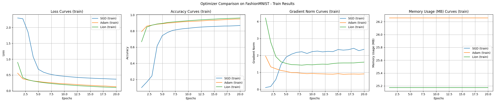
实验结果展示了每个算法的特点。使用 FashionMNIST 数据集和 MLP 模型进行的实验的主要观察结果如下。
基础实验中 Adam 和 Lion 显示了快速的初期收敛速度，Adam 表现最为稳定的学习过程，Lion 使用稍少的内存，而 SGD 则倾向于进行广泛的范围探索。
在 CIFAR-100 和 CNN/变压器模型中，优化算法之间的差异变得更加明显。
from dldna.chapter_05.experiments.advanced import run_advanced_experiment
from dldna.chapter_05.visualization.optimization import plot_training_results
from dldna.chapter_04.utils.data import get_data_loaders
from dldna.chapter_05.optimizers.basic import SGD, Adam
from dldna.chapter_05.optimizers.advanced import Lion
import torch
# Device configuration
device = torch.device("cuda:0" if torch.cuda.is_available() else "cpu")
# Data loaders
train_loader, test_loader = get_data_loaders(dataset="CIFAR100")
# Optimizer dictionary
optimizers = {
'SGD': SGD,
'Adam': Adam,
'Lion': Lion
}
# Optimizer configurations
optimizer_configs = {
'SGD': {'lr': 0.01, 'momentum': 0.9},
'Adam': {'lr': 0.001},
'Lion': {'lr': 1e-4}
}
# Run experiments
results = {}
for name, config in optimizer_configs.items():
print(f"\nStarting experiment with {name} optimizer...")
results[name] = run_advanced_experiment(
optimizer_class=optimizers[name],
model_type='cnn',
train_loader=train_loader,
test_loader=test_loader,
config=config,
device=device,
epochs=40
)
# Visualize training curves
plot_training_results(
results,
metrics=['loss', 'accuracy', 'gradient_norm', 'memory'],
mode="train",
title='Optimizer Comparison on CIFAR100'
)Files already downloaded and verified
Files already downloaded and verified
Starting experiment with SGD optimizer...
==================================================
Optimizer: SGD
Initial CUDA Memory Status (GPU 0):
Allocated: 26.5MB
Reserved: 50.0MB
Model Size: 1194.1K parameters
==================================================
==================================================
Final CUDA Memory Status (GPU 0):
Peak Allocated: 120.4MB
Peak Reserved: 138.0MB
Current Allocated: 35.6MB
Current Reserved: 138.0MB
==================================================
Results saved to: SGD_cnn_20250225_161620.csv
Starting experiment with Adam optimizer...
==================================================
Optimizer: Adam
Initial CUDA Memory Status (GPU 0):
Allocated: 35.6MB
Reserved: 138.0MB
Model Size: 1194.1K parameters
==================================================
==================================================
Final CUDA Memory Status (GPU 0):
Peak Allocated: 124.9MB
Peak Reserved: 158.0MB
Current Allocated: 40.2MB
Current Reserved: 158.0MB
==================================================
Results saved to: Adam_cnn_20250225_162443.csv
Starting experiment with Lion optimizer...
==================================================
Optimizer: Lion
Initial CUDA Memory Status (GPU 0):
Allocated: 31.0MB
Reserved: 158.0MB
Model Size: 1194.1K parameters
==================================================
==================================================
Final CUDA Memory Status (GPU 0):
Peak Allocated: 120.4MB
Peak Reserved: 158.0MB
Current Allocated: 35.6MB
Current Reserved: 158.0MB
==================================================
Results saved to: Lion_cnn_20250225_163259.csv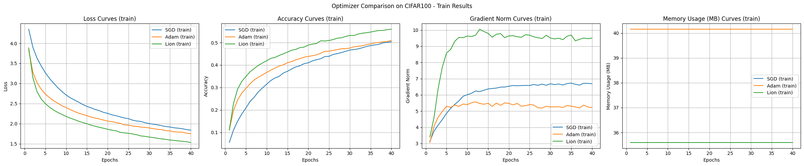
实验结果是使用CIFAR-100数据集和CNN模型比较SGD、Adam、Lion优化算法的，展示了每种算法的特点。
收敛速度及准确性:
学习曲线稳定性:
内存使用量:
梯度范数:
给定的实验条件下，Lion表现出最快的收敛速度和最高的准确性。Adam显示出稳定的學習曲线，而SGD则较慢且波动较大。内存使用量方面，Lion和SGD比Adam略少。
from dldna.chapter_05.experiments.advanced import run_advanced_experiment
from dldna.chapter_05.visualization.optimization import plot_training_results
from dldna.chapter_04.utils.data import get_data_loaders
from dldna.chapter_05.optimizers.basic import SGD, Adam
from dldna.chapter_05.optimizers.advanced import Lion
import torch
# Device configuration
device = torch.device("cuda:0" if torch.cuda.is_available() else "cpu")
# Data loaders
train_loader, test_loader = get_data_loaders(dataset="CIFAR100")
# Optimizer dictionary
optimizers = {
'SGD': SGD,
'Adam': Adam,
'Lion': Lion
}
# Optimizer configurations
optimizer_configs = {
'SGD': {'lr': 0.01, 'momentum': 0.9},
'Adam': {'lr': 0.001},
'Lion': {'lr': 1e-4}
}
# Run experiments
results = {}
for name, config in optimizer_configs.items():
print(f"\nStarting experiment with {name} optimizer...")
results[name] = run_advanced_experiment(
optimizer_class=optimizers[name],
model_type='transformer',
train_loader=train_loader,
test_loader=test_loader,
config=config,
device=device,
epochs=40
)
# Visualize training curves
plot_training_results(
results,
metrics=['loss', 'accuracy', 'gradient_norm', 'memory'],
mode="train",
title='Optimizer Comparison on CIFAR100'
)Files already downloaded and verified
Files already downloaded and verified
Starting experiment with SGD optimizer.../home/sean/anaconda3/envs/DL/lib/python3.10/site-packages/torch/nn/modules/transformer.py:379: UserWarning: enable_nested_tensor is True, but self.use_nested_tensor is False because encoder_layer.norm_first was True
warnings.warn(
==================================================
Optimizer: SGD
Initial CUDA Memory Status (GPU 0):
Allocated: 274.5MB
Reserved: 318.0MB
Model Size: 62099.8K parameters
==================================================
==================================================
Final CUDA Memory Status (GPU 0):
Peak Allocated: 836.8MB
Peak Reserved: 906.0MB
Current Allocated: 749.5MB
Current Reserved: 906.0MB
==================================================
Results saved to: SGD_transformer_20250225_164652.csv
Starting experiment with Adam optimizer...
==================================================
Optimizer: Adam
Initial CUDA Memory Status (GPU 0):
Allocated: 748.2MB
Reserved: 906.0MB
Model Size: 62099.8K parameters
==================================================
==================================================
Final CUDA Memory Status (GPU 0):
Peak Allocated: 1073.0MB
Peak Reserved: 1160.0MB
Current Allocated: 985.1MB
Current Reserved: 1160.0MB
==================================================
Results saved to: Adam_transformer_20250225_170159.csv
Starting experiment with Lion optimizer...
==================================================
Optimizer: Lion
Initial CUDA Memory Status (GPU 0):
Allocated: 511.4MB
Reserved: 1160.0MB
Model Size: 62099.8K parameters
==================================================
==================================================
Final CUDA Memory Status (GPU 0):
Peak Allocated: 985.1MB
Peak Reserved: 1160.0MB
Current Allocated: 748.2MB
Current Reserved: 1160.0MB
==================================================
Results saved to: Lion_transformer_20250225_171625.csv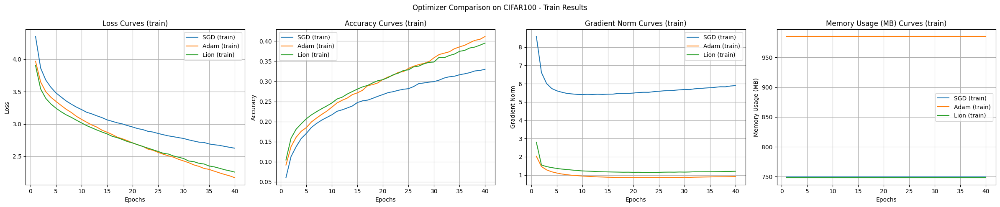
通常，变压器不是直接用于图像分类任务，而是以ViT（视觉变压器）等适应图像特征的结构形式使用。本实验作为优化算法比较的一个例子进行。变压器模型实验结果如下。
结论 在CIFAR-100数据集上的实验结果表明，尽管SGD的学习速度最慢，但其泛化性能最好。Adam虽然内存使用量大，却展示了最快的收敛和稳定的训练过程；Lion在内存效率和收敛速度方面表现出了平衡的性能。
挑战问题: 如何在数百万、数千万维度的高维空间中有效地可视化和理解深度学习最优化过程？
研究者的困惑: 深度学习模型的参数空间是人类难以直观想象的超高维空间。尽管研究人员开发了各种降维技术和可视化工具试图打开这个“黑箱”，但许多部分仍然笼罩在神秘之中。
理解神经网络的学习过程对于有效的模型设计、最优化算法选择以及超参数调优至关重要。特别是，对损失函数（loss function）的几何特性（geometry）和最优化路径（optimization path）进行可视化和分析，可以为学习过程的动力学特性（dynamics）和稳定性（stability）提供重要的洞察力。近年来，损失表面可视化的研究不仅为深度学习研究人员提供了揭开神经网络学习秘密的关键线索，还促进了更高效、稳定的算法及模型结构的发展。
在本节中，我们将探讨损失表面可视化的基本概念和最新技术，并通过这些技术分析深度学习训练过程中出现的各种现象（如：局部最小值、鞍点、最优化路径的特性）。特别是，我们重点讨论了模型结构（例如残差连接）对损失表面的影响，以及不同最优化算法导致的最优化路径差异。
损失表面可视化是理解深度学习模型训练过程的关键工具。就像通过地形图了解山的高度和山谷的位置一样，通过损失表面可视化可以直观地掌握参数空间中损失函数的变化。
2017年Goodfellow等人的研究表明，损失表面的平坦性（flatness）与模型的泛化（generalization）性能密切相关。（宽而平的最小值比窄而尖的最小值更有利于泛化） 2018年Li等人通过三维可视化展示了残差连接（residual connection）如何使损失表面变得平坦，从而促进学习。这些发现已成为ResNet等现代神经网络架构设计的核心基础。
线性插值法 (Linear Interpolation):
概念: 线性地结合两个不同模型（例如：训练前/后模型，收敛到不同局部最小值的模型）的权重，计算它们之间损失函数的值。
公式:
\(w(\alpha) = (1-\alpha)w_1 + \alpha w_2\)
import torch
import torch.nn as nn
from torch.utils.data import DataLoader, Subset
from dldna.chapter_05.visualization.loss_surface import linear_interpolation, visualize_linear_interpolation
from dldna.chapter_04.utils.data import get_dataset
from dldna.chapter_04.utils.metrics import load_model
# Linear Interpolation
# Device configuration
device = torch.device("cuda" if torch.cuda.is_available() else "cpu")
# Get the dataset
_, test_dataset = get_dataset(dataset="FashionMNIST")
# Create a small dataset
small_dataset = Subset(test_dataset, torch.arange(0, 256))
data_loader = DataLoader(small_dataset, batch_size=256, shuffle=True)
loss_func = nn.CrossEntropyLoss()
# model1, _ = load_model(model_file="SimpleNetwork-ReLU.pth", path="tmp/models/")
# model2, _ = load_model(model_file="SimpleNetwork-Tanh.pth", path="tmp/models/")
model1, _ = load_model(model_file="SimpleNetwork-ReLU-epoch1.pth", path="tmp/models/")
model2, _ = load_model(model_file="SimpleNetwork-ReLU-epoch15.pth", path="tmp/models/")
model1 = model1.to(device)
model2 = model2.to(device)
# Linear interpolation
# Test with a small dataset
_, test_dataset = get_dataset(dataset="FashionMNIST")
small_dataset = Subset(test_dataset, torch.arange(0, 256))
data_loader = DataLoader(small_dataset, batch_size=256, shuffle=True)
alphas, losses, accuracies = linear_interpolation(model1, model2, data_loader, loss_func, device)
_ = visualize_linear_interpolation(alphas, losses, accuracies, "ReLU(1)-ReLU(15)", size=(6, 4))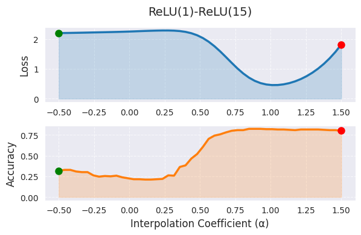
线性插值中，α=0 表示第一个模型（1 个 epoch 训练），α=1 表示第二个模型（15 个 epoch 训练）的权重，中间值表示两个模型权重的线性组合。图中随着 α 值的增加，损失函数值呈现出下降的趋势，这表明随着训练的进行，模型向更好的最优解移动。然而，线性插值仅显示了高维权重空间的一个非常有限的截面，其局限性在于实际的最佳路径可能是非线性的，并且将 α 范围扩展到 [0,1] 之外会使解释变得困难。
使用贝塞尔曲线或样条进行非线性路径探索、通过 PCA 或 t-SNE 进行高维结构可视化可以提供更全面的信息。在实践中，线性插值可以用作初始分析工具，并且最好将 α 限制在 [0,1] 范围内或略作外推。结合其他可视化技术进行综合分析，在模型性能差异较大时需要额外的分析。
以下是 PCA 和 t-SNE 分析。
import torch
from dldna.chapter_05.visualization.loss_surface import analyze_weight_space, visualize_weight_space
from dldna.chapter_04.utils.metrics import load_model, load_models_by_pattern
models, labels = load_models_by_pattern(
activation_types=['ReLU'],
# activation_types=['Tanh'],
# activation_types=['GELU'],
epochs=[1,2,3,4,5,6,7,8,9,10,11,12,13,14,15]
)
# PCA analysis
embedded_pca = analyze_weight_space(models, labels, method='pca')
visualize_weight_space(embedded_pca, labels, method='PCA')
print(f"embedded_pca = {embedded_pca}")
# t-SNE analysis
embedded_tsne = analyze_weight_space(models, labels, method='tsne', perplexity=1)
visualize_weight_space(embedded_tsne, labels, method='t-SNE')
print(f"embedded_tsne = {embedded_tsne}") # Corrected: Print embedded_tsne, not embedded_pca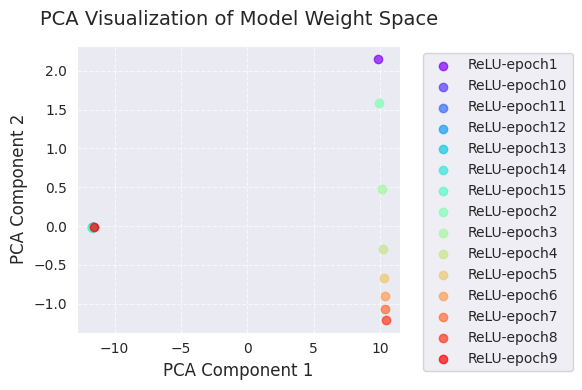
embedded_pca = [[ 9.8299894e+00 2.1538167e+00]
[-1.1609798e+01 -9.0169059e-03]
[-1.1640446e+01 -1.2218434e-02]
[-1.1667191e+01 -1.3469303e-02]
[-1.1691980e+01 -1.5136327e-02]
[-1.1714937e+01 -1.6765745e-02]
[-1.1735878e+01 -1.8110925e-02]
[ 9.9324265e+00 1.5862983e+00]
[ 1.0126298e+01 4.7935897e-01]
[ 1.0256655e+01 -2.8844318e-01]
[ 1.0319887e+01 -6.6510278e-01]
[ 1.0359785e+01 -8.9812231e-01]
[ 1.0392080e+01 -1.0731999e+00]
[ 1.0418671e+01 -1.2047548e+00]
[-1.1575559e+01 -5.1336871e-03]]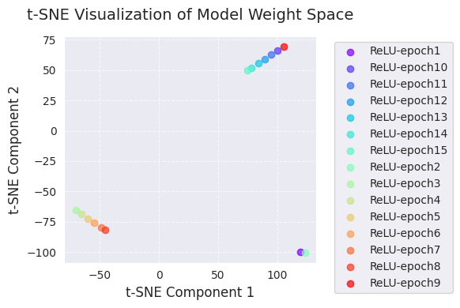
embedded_tsne = [[ 119.4719 -99.78837 ]
[ 100.26558 66.285835]
[ 94.79294 62.795162]
[ 89.221085 59.253677]
[ 83.667984 55.70297 ]
[ 77.897224 52.022995]
[ 74.5897 49.913578]
[ 123.20351 -100.34615 ]
[ -70.45423 -65.66194 ]
[ -65.55417 -68.90429 ]
[ -60.166885 -72.466805]
[ -54.70004 -76.077 ]
[ -49.00131 -79.833694]
[ -45.727974 -81.99213 ]
[ 105.22419 69.45333 ]]PCA和t-SNE可视化展示了学习过程中模型权重空间的变化，将其投影到低维（2维）空间中。
通过这些可视化，我们可以直观地理解学习过程中模型权重的变化以及优化算法在权重空间中的探索。特别是结合使用PCA和t-SNE，可以同时把握全局变化（PCA）和局部结构（t-SNE）。
等高线图是在二维平面上绘制连接损失函数值相同的点（等高线），以可视化损失表面形态的方法。就像地形图中的等高线一样，表示损失函数的“高低”.
一般步骤如下：
设定基点: 选择作为基准的模型参数(\(w_0\))。(例如: 训练完成后的模型参数)
选择方向向量: 选择两个方向向量(\(d_1\), \(d_2\))。这些向量形成二维平面的基(basis)
参数扰动: 以基点\(w_0\)为中心，沿选定的两个方向向量\(d_1\), \(d_2\)扰动(perturb)参数。
\(w(\lambda_1, \lambda_2) = w_0 + \lambda_1 d_1 + \lambda_2 d_2\)
计算损失值: 对每个\((\lambda_1, \lambda_2)\)组合，将扰动后的参数\(w(\lambda_1, \lambda_2)\)应用于模型，并计算损失函数值。
绘制等高线图: 使用\((\lambda_1, \lambda_2, L(w(\lambda_1, \lambda_2)))\)数据绘制二维等高线图。(使用matplotlib的contour或tricontourf函数等)
等高线图可以直观地显示损失表面的局部形态(local geometry)，还可以与优化算法的轨迹(trajectory)一起表示，以分析算法的工作方式。
import torch
import numpy as np
import torch.nn as nn
from torch.utils.data import DataLoader, Subset
from dldna.chapter_05.visualization.loss_surface import hessian_eigenvectors, xy_perturb_loss, visualize_loss_surface, linear_interpolation
from dldna.chapter_04.utils.data import get_dataset
from dldna.chapter_04.utils.metrics import load_model
from dldna.chapter_05.optimizers.basic import SGD, Adam
# Device configuration
device = torch.device("cuda" if torch.cuda.is_available() else "cpu")
# Get the dataset
_, test_dataset = get_dataset(dataset="FashionMNIST")
# Create a small dataset
small_dataset = Subset(test_dataset, torch.arange(0, 256))
data_loader = DataLoader(small_dataset, batch_size=256, shuffle=True)
loss_func = nn.CrossEntropyLoss()
trained_model, _ = load_model(model_file="SimpleNetwork-ReLU.pth", path="tmp/models/")
# trained_model, _ = load_model(model_file="SimpleNetwork-Tanh.pth", path="tmp/models/")
trained_model = trained_model.to(device)
# pyhessian
data = [] # List to store the calculated result sets
top_n = 4 # Must be an even number. Each pair of eigenvectors is used. 2 is the minimum. 10 means 5 graphs.
top_eigenvalues, top_eignevectors = hessian_eigenvectors(model=trained_model, loss_func=loss_func, data_loader=data_loader, top_n=top_n, is_cuda=True)
# Define the scale with lambda.
lambda1, lambda2 = np.linspace(-0.2, 0.2, 40).astype(np.float32), np.linspace(-0.2, 0.2, 40).astype(np.float32)
# If top_n=10, a total of 5 pairs of graphs can be drawn.
for i in range(top_n // 2):
x, y, z = xy_perturb_loss(model=trained_model, top_eigenvectors=top_eignevectors[i*2:(i+1)*2], data_loader=data_loader, loss_func=loss_func, lambda1=lambda1, lambda2=lambda2, device=device)
data.append((x, y, z))
_ = visualize_loss_surface(data, "ReLU", color="C0", alpha=0.6, plot_3d=True)
_ = visualize_loss_surface(data, "ReLU", color="C0", alpha=0.6, plot_3d=False) # Changed "ReLu" to "ReLU" for consistency/home/sean/anaconda3/envs/DL/lib/python3.10/site-packages/torch/autograd/graph.py:825: UserWarning: Using backward() with create_graph=True will create a reference cycle between the parameter and its gradient which can cause a memory leak. We recommend using autograd.grad when creating the graph to avoid this. If you have to use this function, make sure to reset the .grad fields of your parameters to None after use to break the cycle and avoid the leak. (Triggered internally at ../torch/csrc/autograd/engine.cpp:1201.)
return Variable._execution_engine.run_backward( # Calls into the C++ engine to run the backward pass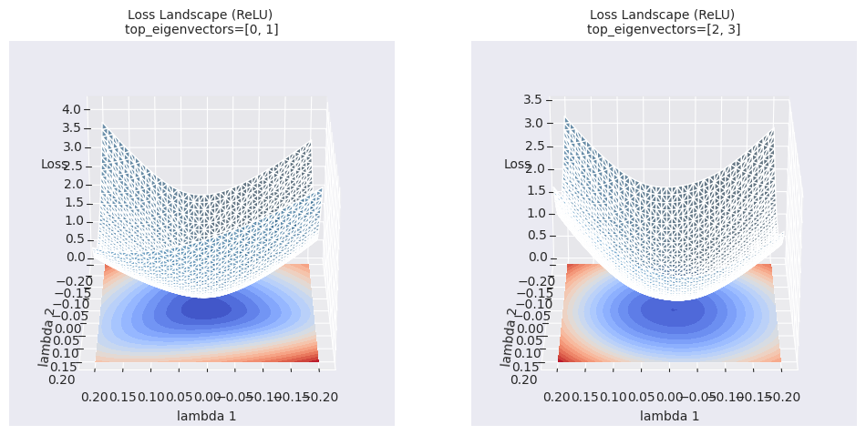
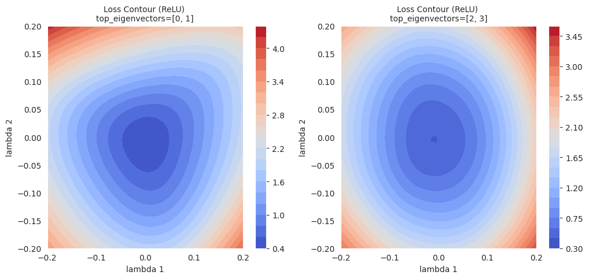
等高线图比简单的线性插值提供更丰富的局部区域信息。线性插值显示了两个模型之间的一维路径上的损失函数值的变化，而等高线图则在选定的两个方向(\(\lambda_1\), \(\lambda_2\))为轴的二维平面上可视化损失函数的变化。通过这种方式，可以观察到优化路径上的细微变化、线性插值无法揭示的周围区域的局部最小值(local minima)、鞍点(saddle point)的存在及其之间的障碍(barrier)等。
超越简单的可视化（线性插值、等高线图），正在研究更深入地理解深度学习模型损失表面(loss landscape)的高级分析技术。
拓扑数据分析 (Topological Data Analysis, TDA):
多尺度分析 (Multi-scale Analysis):
这些高级分析技术提供了关于损失表面更抽象和定量的信息，有助于更深入地理解深度学习模型的学习过程，并为更好的模型设计及优化策略的制定做出贡献。
import torch
import torch.nn as nn # Import the nn module
from torch.utils.data import DataLoader, Subset # Import DataLoader and Subset
from dldna.chapter_05.visualization.loss_surface import analyze_loss_surface_multiscale
from dldna.chapter_04.utils.data import get_dataset # Import get_dataset
from dldna.chapter_04.utils.metrics import load_model # Import load_model
# Device configuration
device = torch.device("cuda" if torch.cuda.is_available() else "cpu")
# Load dataset and create a small subset
_, test_dataset = get_dataset(dataset="FashionMNIST")
small_dataset = Subset(test_dataset, torch.arange(0, 256))
data_loader = DataLoader(small_dataset, batch_size=256, shuffle=True)
loss_func = nn.CrossEntropyLoss()
# Load model (example: SimpleNetwork-ReLU)
model, _ = load_model(model_file="SimpleNetwork-ReLU.pth", path="tmp/models/")
model = model.to(device)
_ = analyze_loss_surface_multiscale(model, data_loader, loss_func, device)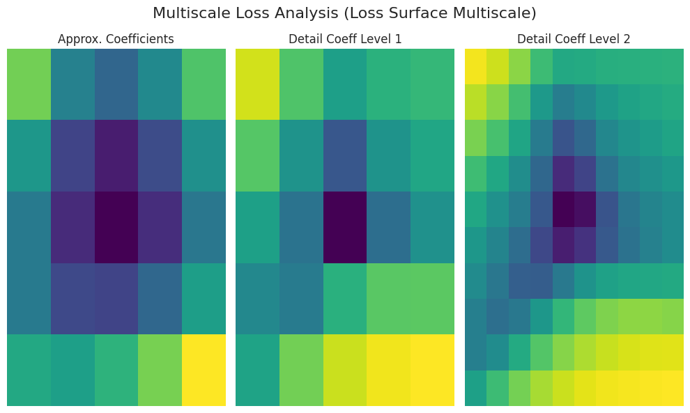
使用 analyze_loss_surface_multiscale 函数从多尺度角度分析、可视化了在 FashionMNIST 数据集上训练的 SimpleNetwork-ReLU 模型的损失表面。
图形解释（基于小波变换）:
Approx. Coefficients (近似系数): 表示损失表面的整体形态(global structure)。中心区域（低损失值）可能存在最小值。
Detail Coeff Level 1/2 (细节系数): 表示更小规模的变化。“Level 1”表示中间尺度，“Level 2”显示最细微的尺度的起伏（局部最小值、鞍点、噪声等）。
颜色: 深色（低损失），亮色（高损失）
根据 analyze_loss_surface_multiscale 函数的实现（小波函数、分解级别等），结果可能会有所不同。
该可视化仅显示了损失表面的部分，难以完全理解高维空间的复杂性。
多尺度分析通过将损失表面分解为多个尺度，展示了单凭简单可视化难以发现的多层次结构。在大尺度上可以把握总体趋势，在小尺度上可以观察局部变化，有助于理解优化算法的行为、学习难度和泛化性能等。
拓扑学(topology)是研究在连续变形下不变的几何性质的领域。在深度学习中，基于拓扑的分析通过分析损失面的连通性(connectivity)，孔洞(hole)，空腔(void)等拓扑特征(topological feature)，以获得关于学习动力学和泛化性能的洞察力。
核心概念:
Sublevel Set: 给定函数 \(f: \mathbb{R}^n \rightarrow \mathbb{R}\) 和阈值 \(c\)，定义为 \(f^{-1}((-\infty, c]) = {x \in \mathbb{R}^n | f(x) \leq c}\) 的集合。在损失函数中，它表示具有特定损失值以下的参数空间区域。
Persistent Homology: 跟踪sublevel set的变化，记录拓扑特征（0阶：连通分支，1阶：环路，2阶：空腔，…）的生成和消亡。
Persistence Diagram: 将每个拓扑特征的生成(birth)和消亡(death)时刻的损失值以坐标平面上的点表示出来。点的 \(y\) 坐标（\(\text{death} - \text{birth}\)）表示该特征的“寿命(lifetime)”或“持久性(persistence)”，值越大，特征越稳定。
Bottleneck Distance: 是测量两个persistence diagram之间距离的方法之一。通过找到两个图中的点之间的最优匹配(optimal matching)，计算匹配点之间的最大距离。
数学背景（简要）:
深度学习研究应用: * 损失表面结构分析: 通过持久图可以了解损失表面的复杂性、局部最小值的数量及稳定性、鞍点的存在与否等。 * 示例: Gur-Ari et al., 2018 计算了神经网络损失表面的持久图，表明宽(wide)网络比窄(narrow)网络具有更简单的拓扑结构。 * 泛化性能预测: 持久图的特征（例如寿命最长的0维特征的寿命）可能与模型的泛化性能相关。 * 示例: Perez et al., 2022 提出了一种使用持久图特征来预测模型泛化性能的方法。 * 模式连通性: 寻找连接不同局部最小值的路径，并分析这些路径上的能量屏障(energy barrier)。 * 示例: Garipov et al., 2018
参考文献:
深度学习模型的损失表面具有不同尺度的特征。从大尺度的山谷（valley）和山脊（ridge）到小尺度的凸起（bump）和坑洞（hole），各种几何结构都会影响学习过程。多尺度分析是将这些不同尺度的特征分离并进行分析的方法。
核心思想:
小波变换 (Wavelet Transform): 小波变换是一种数学工具，可以将信号分解为不同的频率成分。将其应用于损失函数时，可以分离出不同尺度的特征。
连续小波变换 (Continuous Wavelet Transform, CWT):
\(W(a, b) = \int\_{-\infty}^{\infty} f(x) \psi\_{a,b}(x) dx\)
母小波 (Mother Wavelet): 满足特定条件的函数（例如：墨西哥帽小波，Morlet 小波）（详细内容参见参考文献 [2]）
多分辨率分析 (Multi-resolution Analysis, MRA): 对CWT进行离散化处理，将信号分解为不同分辨率水平的方法。
数学背景（简要）:
深度学习研究应用:
损失表面粗糙度分析: 通过小波变换量化损失表面的粗糙度，并分析其对学习速度和泛化性能的影响。
优化算法分析: 分析优化算法在每个尺度上跟踪哪些特征，以更好地理解算法的工作方式。
参考文献:
注意： 在翻译中保持了所有数学表达式和表格格式不变。 1. Mallat, S. (2008). 小波信号处理之旅：稀疏方法. Academic press. 2. Daubechies, I. (1992). 小波十讲. Society for industrial and applied mathematics. 3. Li, Y., Hu, W., Zhang, Y., & Gu, Q. (2019). 深度网络损失景观的多分辨率分析. arXiv preprint arXiv:1910.00779.
深度学习模型的实际损失曲面（loss surface）存在于数百万到数十亿维的超维度空间中，具有非常复杂的几何结构。因此，直接对其进行可视化和分析实际上是不可能的。此外，实际损失曲面存在不可微点、不连续点、数值不稳定等众多问题，给理论分析也带来了困难。
为了克服这些限制并概念性地理解最优化过程，我们使用具有平滑（smooth）、连续（continuous）且凸（convex）形状的高斯函数（Gaussian function）来对损失曲面进行近似（approximation）。
使用高斯函数的原因（损失曲面近似的优点）：
高斯函数公式：
\(z = A \exp\left(-\left(\frac{(x-x_0)^2}{2\sigma_1^2} + \frac{(y-y_0)^2}{2\sigma_2^2}\right)\right)\)
当然，实际损失曲面可能具有比高斯函数更复杂的形状。（多个局部最小值、鞍点、高原等）。但是，使用单个高斯函数进行近似可以提供理解最优化算法基本行为特性（例如：收敛速度、振动模式）和比较不同算法的有用起点。 为了模拟更复杂的损失曲面，可以使用由多个高斯函数组合而成的高斯混合模型（Gaussian Mixture Model, GMM）。
本节将通过使用单个高斯函数对损失曲面进行近似，并应用各种最优化算法（SGD、Adam等）来可视化学习轨迹（learning trajectory），从而直观地了解每个算法的动力学特性和优缺点。
import torch
import numpy as np
import torch.nn as nn
from torch.utils.data import DataLoader, Subset
from dldna.chapter_05.visualization.loss_surface import hessian_eigenvectors, xy_perturb_loss, visualize_loss_surface, linear_interpolation
from dldna.chapter_04.utils.data import get_dataset
from dldna.chapter_04.utils.metrics import load_model
from dldna.chapter_05.optimizers.basic import SGD, Adam
from dldna.chapter_05.visualization.gaussian_loss_surface import (
get_opt_params, visualize_gaussian_fit, train_loss_surface, visualize_optimization_path
)
# Device configuration
device = torch.device("cuda" if torch.cuda.is_available() else "cpu")
# Get the dataset
_, test_dataset = get_dataset(dataset="FashionMNIST")
# Create a small dataset
small_dataset = Subset(test_dataset, torch.arange(0, 256))
data_loader = DataLoader(small_dataset, batch_size=256, shuffle=True)
loss_func = nn.CrossEntropyLoss()
trained_model, _ = load_model(model_file="SimpleNetwork-ReLU.pth", path="tmp/models/")
# trained_model, _ = load_model(model_file="SimpleNetwork-Tanh.pth", path="tmp/models/")
trained_model = trained_model.to(device)
# Loss surface data generation
top_n = 2
top_eigenvalues, top_eignevectors = hessian_eigenvectors(
model=trained_model,
loss_func=loss_func,
data_loader=data_loader,
top_n=top_n,
is_cuda=True
)
# Define lambda range
d_min, d_max, d_num = -1, 1, 30
lambda1 = np.linspace(d_min, d_max, d_num).astype(np.float32)
lambda2 = np.linspace(d_min, d_max, d_num).astype(np.float32)
# Calculate loss surface
x, y, z = xy_perturb_loss(
model=trained_model,
top_eigenvectors=top_eignevectors,
data_loader=data_loader,
loss_func=loss_func,
lambda1=lambda1,
lambda2=lambda2,
device=device
)
# After generating loss surface data
popt, _, offset = get_opt_params(x, y, z)
# Visualize Gaussian fitting
visualize_gaussian_fit(x, y, z, popt, offset, d_min, d_max, d_num)
# View from a different angle
visualize_gaussian_fit(x, y, z, popt, offset, d_min, d_max, d_num,
elev=30, azim=45)Function parameters = [29.27164346 -0.0488573 -0.06687705 0.7469189 0.94904458]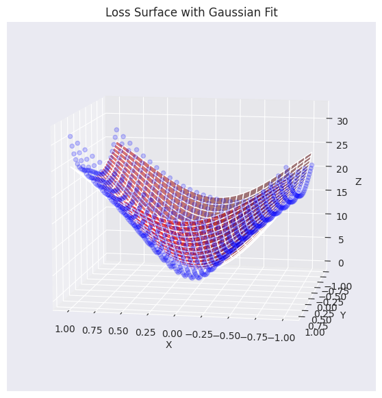
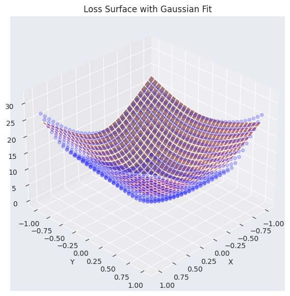
将实际损失平面数据（蓝色点）与高斯函数近似的平面（红色）进行了可视化叠加。如图所示，生成的高斯函数较好地捕捉了原始损失表面数据的整体趋势（特别是中心部分的凹形），并生成了类似的曲面。现在，我们将使用这个近似后的损失平面函数来分析和可视化不同的优化算法（optimizer）如何找到最小值的过程。
使用高斯函数近似的损失平面，我们将在2D平面上可视化优化器是如何工作的。
翻译后的文本：
# Gaussian fitting
popt, _, offset = get_opt_params(x, y, z)
gaussian_params = (*popt, offset)
# Calculate optimization paths
points_sgd = train_loss_surface(
lambda params: SGD(params, lr=0.1),
[d_min, d_max], 100, gaussian_params
)
points_sgd_m = train_loss_surface(
lambda params: SGD(params, lr=0.05, momentum=0.8),
[d_min, d_max], 100, gaussian_params
)
points_adam = train_loss_surface(
lambda params: Adam(params, lr=0.1),
[d_min, d_max], 100, gaussian_params
)
# Visualization
visualize_optimization_path(
x, y, z, popt, offset,
[points_sgd, points_sgd_m, points_adam],
act_name="ReLU"
)图形展示了在用高斯函数近似的损失表面上，SGD、动量SGD和Adam这三种优化算法的学习路径。在这三个算法中，无论是梯度平缓的区域还是陡峭的区域，都表现出各自不同的特性。
在实践中，相比于SGD本身，应用了动量的SGD更受青睐，像Adam或AdamW这样的自适应优化算法也广泛使用。通常情况下，损失表面大部分区域是平坦的，但在最小值附近往往呈现狭窄而深邃的山谷形状。这导致较大的学习率可能会错过最小值（overshoot）甚至发散（diverge），因此通常会与逐渐减少学习率的学习率调度器（learning rate scheduler）一起使用。此外，除了优化算法的选择外，还需要综合考虑适当的学习率调度器、批量大小、正则化技术等。


上述损失面图像展示了使用ImageNet数据集新训练的ResNet-50模型的三维损失表面。（使用PyHessian计算的Hessian矩阵的前两个特征向量作为轴）。与高斯函数近似不同，实际的深度学习模型的损失表面呈现出更加复杂和不规则的形态。然而，中心区域（蓝色区域）存在最小值的大趋势仍然保持不变。这种可视化有助于直观理解深度学习模型的实际损失面具有多么复杂的地形，以及为什么优化是一个困难的问题。
在深度学习模型训练中，理解最优化算法如何找到损失函数最小值的路径及其动态特性(dynamics)是非常重要的。特别是随着大规模语言模型（LLM）的出现，数十亿参数模型的学习动力学分析和控制变得更加重要。
深度学习模型的训练过程可以分为初期、中期和后期三个阶段，每个阶段都有其特点。
各学习阶段的特性：
层间梯度特性：
参数依赖性：
最优化路径分析：
为了分析最优化过程的稳定性(stability)，考虑以下方面。
梯度诊断 (Gradient Diagnostics)：
基于海森矩阵的分析 (Hessian-based Analysis)：
实时监控 (Real-time Monitoring)：
梯度裁剪 (Gradient Clipping)： 将梯度大小(norm)限制在不超过某个阈值(threshold)。
\(g \leftarrow \text{clip}(g) = \min(\max(g, -c), c)\)
\(g\): 梯度, \(c\): 阈值
自适应学习率 (Adaptive Learning Rate): Adam, RMSProp, Lion, Sophia 等根据梯度统计自动调整学习率。
学习率调度器 (Learning Rate Scheduler): 根据学习轮次(epoch)或验证损失(validation loss)逐步降低学习率。
超参数优化 (Hyperparameter Optimization): 自动搜索/调整与优化相关的超参数。
最近(2024年)，学习动力学研究正朝着以下方向发展：
这些研究使深度学习模型的学习更加稳定/高效，并有助于理解“黑盒”。
现在，让我们通过一个简单的例子来探讨优化过程的动态分析。
import torch
import torch.nn as nn
import torch.optim as optim
from torch.utils.data import DataLoader, Subset # Import Subset
from dldna.chapter_05.visualization.train_dynamics import visualize_training_dynamics
from dldna.chapter_04.utils.data import get_dataset
from dldna.chapter_04.utils.metrics import load_model
# Device configuration
device = torch.device("cuda" if torch.cuda.is_available() else "cpu")
# Load the FashionMNIST dataset (both training and testing)
train_dataset, test_dataset = get_dataset(dataset="FashionMNIST")
train_loader = DataLoader(train_dataset, batch_size=256, shuffle=True)
loss_func = nn.CrossEntropyLoss()
# Load a pre-trained model (e.g., ReLU-based network)
trained_model, _ = load_model(model_file="SimpleNetwork-ReLU.pth", path="tmp/models/")
trained_model = trained_model.to(device)
# Choose an optimizer (e.g., Adam)
optimizer = optim.Adam(trained_model.parameters(), lr=0.001)
# Call the training dynamics visualization function (e.g., train for 10 epochs with the entire training dataset)
metrics = visualize_training_dynamics(
trained_model, optimizer, train_loader, loss_func, num_epochs=20, device=device
)
# Print the final results for each metric
print("Final Loss:", metrics["loss"][-1])
print("Final Grad Norm:", metrics["grad_norm"][-1])
print("Final Param Change:", metrics["param_change"][-1])
print("Final Weight Norm:", metrics["weight_norm"][-1])
print("Final Loss Improvement:", metrics["loss_improvement"][-1])上述示例展示了学习动力学(learning dynamics)的各个方面。使用针对FashionMNIST数据集预训练的SimpleNetwork-ReLU模型，在使用Adam优化算法进行额外训练时，我们可视化了每个epoch的以下五个关键指标(metric)。
图表显示的内容如下。
通过这个示例，可以直观地了解优化算法如何最小化损失函数、梯度的变化、参数的变化等，并获得对学习动力学的直观理解。
本次第五章深入探讨了与深度学习模型训练的核心要素——优化相关的各种主题。我们探讨了权重初始化方法的重要性、不同优化算法(SGD, Momentum, Adam, Lion, Sophia, AdaFactor)的原理和特性，以及通过损失表面可视化及学习动力学分析来更好地理解深度学习模型的学习过程。
在第六章中，我们将详细介绍用于提高深度学习模型泛化性能的关键技术——正则化(regularization)。我们将探讨L1/L2正则化、dropout、批标准化(batch normalization)、数据增强(data augmentation)等不同正则化技术的原理和效果，并通过实战示例来掌握其应用方法。
SGD 手动计算:
梯度下降法收敛速度比较:
初始化方法比较:
Adam 优化器:
批标准化与初始化:
Lion 优化器分析:
c_t = β_1 * m_{t-1} + (1 - β_1) * g_t w_{t+1} = w_t - η * sign(c_t) m_t = c_t
初始化方法实验:
优化路径可视化: